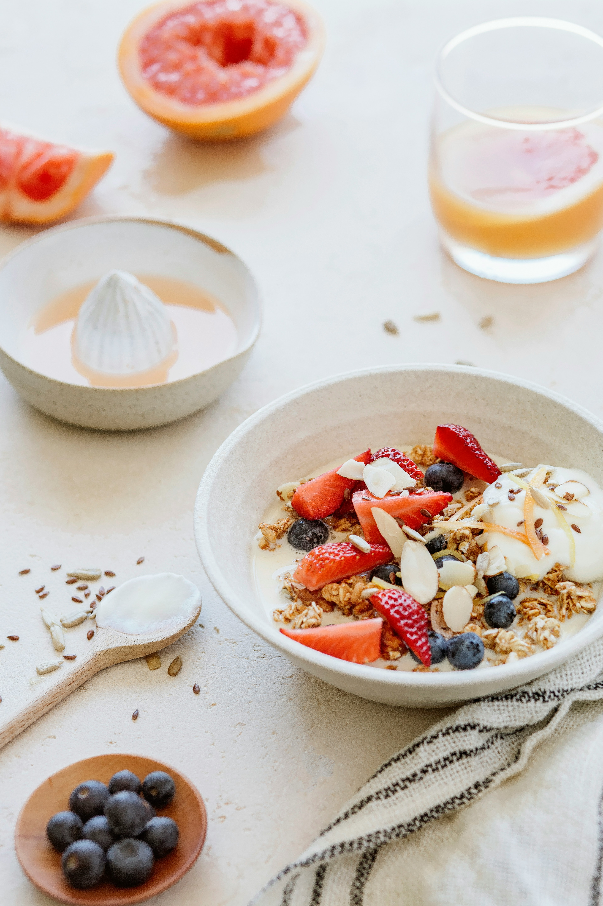

Oatmeal with Fruits
Oatmeal is a great source of fiber and can help keep you full throughout the morning. Adding fruits provides natural sweetness and additional vitamins and minerals. It is important to choose plain oatmeal and avoid instant flavored varieties that may contain added sugars. You can customize your oatmeal with your favorite fruits, nuts, and seeds for a delicious and nutritious breakfast option. The best morning breakfast is one that includes a balance of protein, healthy fats, and complex carbohydrates to keep you full and energized throughout the morning.